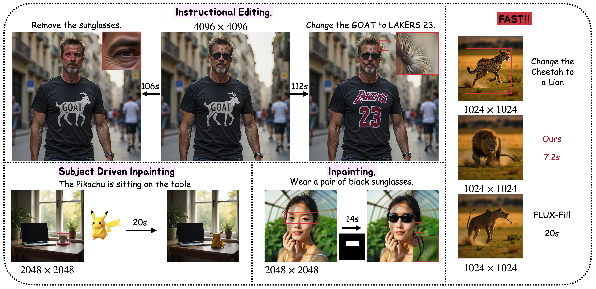

HierEdit: Region-Aware Hierarchical Diffusion for Efficient High-Resolution Editing
Yuyao Zhang · Alexander Huang-Menders · Yu-Wing Tai
CVPR 2026

HierEdit edits a low-resolution proxy to localize the modified region, then refines only that
region at the original high resolution with a Local-Window MMDiT — enabling high-fidelity
editing up to 4K without dense full-canvas attention.